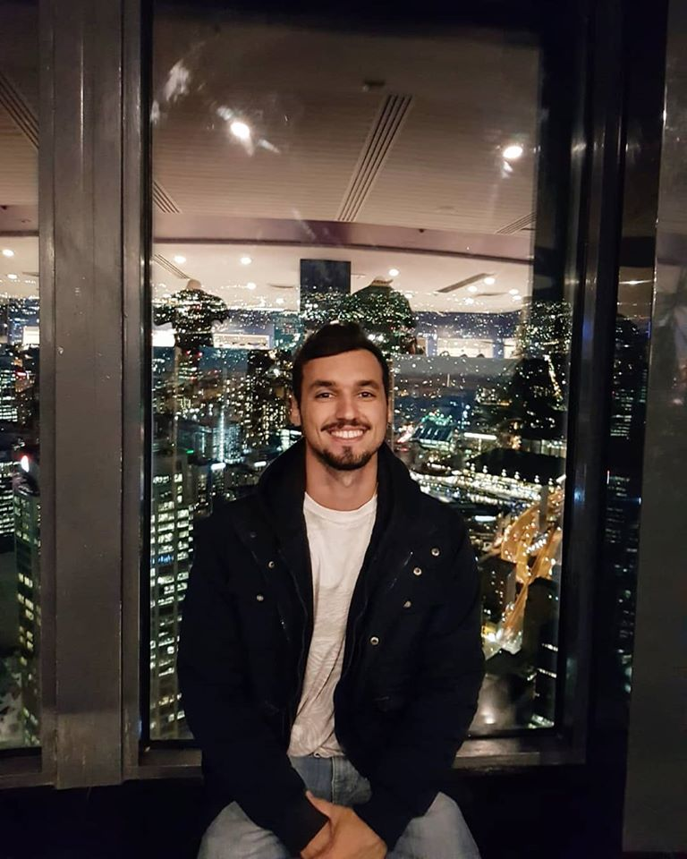

foto | sobre | habilidades | me ache | hobby
Maurício Silva d'Ávila Júnior

Foto tirada na Sydney Tower em Sydney na Austrália.
Sobre mim
Brasileiro e manezinho da ilha morando em Florianópolis/SC.
Habilidades
- Formado em Administração de Empresas
- Experiência em vendas
- Experiência em atendimento ao cliente
- Desenvolvimento Web Front-End (ramo atual)
Onde Estou?
O que amo fazer quando tenho tempo vago? Viajar!
Blog muito legal sobre viagens!
foto | sobre | habilidades | me ache | hobby